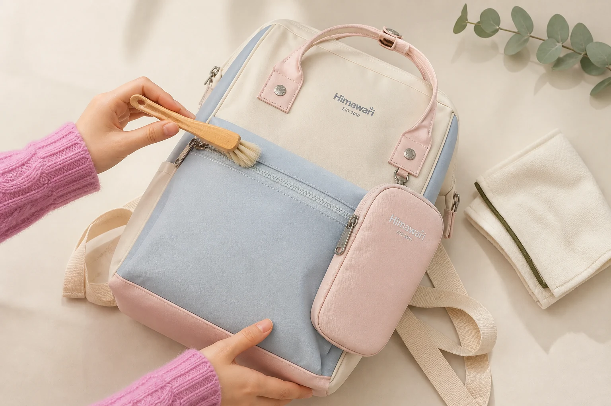

백팩 지퍼·버클 관리법: 부자재를 오래 쓰는 점검 순서

백팩을 자주 쓰다 보면 원단보다 먼저 손이 닿는 곳이 지퍼 손잡이, 버클과 금속 고리입니다. 움직이는 부자재는 작은 먼지나 원단 끼임만으로도 사용감이 달라질 수 있습니다. 문제가 생긴 뒤 힘을 주기보다 사용 전후에 상태를 짧게 확인하는 편이 안전합니다.
1. 가방을 비우고 밝은 곳에서 살펴보세요
메인 수납칸과 작은 포켓을 모두 비운 뒤 평평한 곳에 가방을 둡니다. 지퍼 레일에 실밥, 머리카락이나 모래가 붙어 있는지, 안감이 지퍼 가까이 접혀 있는지 확인하세요. 버클은 양쪽 부품이 비뚤어지지 않았는지, 금속 고리는 눈에 띄게 휘거나 흔들리지 않는지 살핍니다.
2. 지퍼 레일의 먼지는 마른 상태에서 제거하세요
부드러운 마른 솔이나 깨끗한 천으로 지퍼 레일을 따라 가볍게 먼지를 털어냅니다. 날카로운 도구로 틈을 긁으면 지퍼 이빨이나 주변 원단을 건드릴 수 있으므로 피하세요. 물이나 세정제를 사용하기 전에는 반드시 제품의 관리 표시를 확인해야 합니다.
겉감 오염도 함께 보인다면 지퍼만 관리한 뒤 임의로 가방 전체를 적시지 말고, 백팩 소재별 표면 관리 순서를 먼저 확인하세요.
3. 지퍼는 양쪽을 맞춘 뒤 직선으로 움직이세요
가방이 과하게 채워진 상태에서 지퍼를 억지로 닫으면 레일과 봉제선에 힘이 집중될 수 있습니다. 내용물을 조금 덜어내고 지퍼 양쪽이 같은 높이에 놓였는지 확인한 뒤, 손잡이를 레일 방향으로 천천히 움직입니다. 손잡이를 위나 옆으로 크게 비틀어 당기지 않는 것이 좋습니다.
지퍼가 안감을 물었다면 움직이던 방향을 멈추고 가방을 평평하게 둡니다. 끼인 원단의 장력을 풀면서 슬라이더를 아주 조금 뒤로 움직여 빼내세요. 힘을 줘도 풀리지 않으면 더 당기지 말고 수선 전문가에게 확인하는 편이 안전합니다.
4. 버클은 소리보다 정렬과 잠김을 확인하세요
플라스틱 버클은 양쪽을 같은 방향으로 맞춘 뒤 눌러 결합하고, 가볍게 당겨 잠겼는지 확인합니다. 모래나 작은 이물질이 홈에 들어가면 완전히 맞물리지 않을 수 있으므로 마른 솔로 틈을 정리합니다. 추운 환경이나 오래된 부품은 힘을 주어 비트는 행동을 피하세요.
5. 금속 고리와 장식은 마른 천으로 마무리하세요
금속 표면의 손자국과 먼지는 부드러운 마른 천으로 가볍게 닦습니다. 광택제, 알코올이나 물티슈는 표면 처리와 주변 원단에 영향을 줄 수 있으므로 제품 안내 없이 바로 사용하지 않습니다. 비에 젖었다면 먼저 젖은 백팩을 말리는 순서에 따라 수분을 충분히 제거하세요.
정기 점검용 5문장 점검표
- 지퍼 레일에 먼지나 실밥이 끼지 않았나요?
- 안감이 지퍼 주변으로 접히지 않았나요?
- 가방을 과하게 채운 채 지퍼를 당기고 있지 않나요?
- 버클 양쪽이 끝까지 맞물리나요?
- 금속 고리와 봉제 연결부가 눈에 띄게 변형되지 않았나요?
관리 후에는 수납칸을 열어 둔 채 통풍시키고, 완전히 마른 상태에서 보관합니다. 장기간 보관할 때는 백팩 형태를 유지하는 보관법처럼 다른 가방에 눌리지 않는 자리를 마련하세요.
참고·안내
- Himawari 제품별 소재·부자재 정보
- 세척제나 윤활제 사용 전에는 각 제품의 관리 표시와 제조사 안내를 우선해 주세요.
자주 묻는 질문
뻑뻑한 지퍼에 바로 윤활제를 사용해도 되나요?
제품에 따라 원단과 코팅에 영향을 줄 수 있으므로 임의의 제품을 바로 바르지 마세요. 먼저 먼지와 원단 끼임을 확인하고, 계속 문제가 있으면 제품 안내나 수선 전문가에게 문의하세요.
지퍼가 원단을 물었을 때 힘으로 당겨도 되나요?
세게 당기면 원단이나 지퍼가 손상될 수 있습니다. 당기던 방향을 멈추고 원단의 장력을 풀어 끼인 부분을 천천히 빼내세요.
금속 장식은 물티슈로 닦아도 되나요?
물티슈 성분과 부자재 표면 처리가 서로 다를 수 있습니다. 제품 안내를 우선하고, 평소에는 부드러운 마른 천으로 먼지와 손자국을 가볍게 닦는 편이 안전합니다.